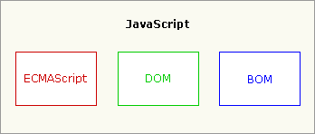
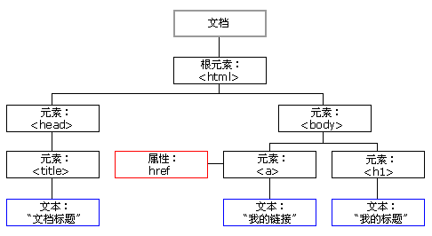

在我们学习一门编程语言之前，我们应该先了解它的一些基本概念，包括它是什么，它能用来干什么，怎么用等等。
一 何为“JavaScript”
1 、 什么是JavaScript？
W3School上的定义：JavaScript 是因特网上最流行的脚本语言，它存在于全世界所有 Web 浏览器中，能够增强用户与 Web 站点和 Web 应用程序之间的交互。
我们平常所说的JavaScript其实是由3部分组成：核心（ECMAScript）、文档对象模型（DOM）、浏览器对象模型（BOM）。

ECMAScript：
ECMAScript并不与任何浏览器相帮绑定，也没有提供任何用户输入输出的方法，它只是简单描述了：语法、类型、语句、关键字、保留字、运算符、对象，这些脚本语言的属性和方法，以及对象。
Web浏览器只是ECMAScript的一个宿主对象，其他的实现还有例如 Nombas 的 ScriptEase，以及 Macromedia 同时用在 Flash 和 Director MX 中的 ActionScript等等，我们说的JavaScript就是浏览器在ECMAScript的基础上扩展了DOM和BOM的一种实现。
DOM：
MDN上的定义如下：DOM（Document Object Model——文档对象模型）是用来呈现以及与任意 HTML 或 XML文档交互的API。DOM 是载入到浏览器中的文档模型，以节点树的形式来表现文档，每个节点代表文档的构成部分（例如:页面元素、字符串或注释等等）。
DOM 是万维网上使用最为广泛的API之一，因为它允许运行在浏览器中的代码访问文件中的节点并与之交互。节点可以被创建，移动或修改。事件监听器可以被添加到节点上并在给定事件发生时触发。
DOM 并不是天生就被规范好了的，它是浏览器开始实现JavaScript时才出现的。这个传统的 DOM 有时会被称为 DOM 0。现在， WHATWG维护DOM现存标准。

BOM：
BOM其实没有标准的官方定义，但现代浏览器基本上都实现了一些相同的属性和方法，以实现JavaScript与浏览器之间进行“对话”。
2 、 JavaScript发展史
Netscape（网景）在1995年的时候，凭借其Navigator浏览器成为互联网时代的第一代霸主。由于网景公司想在静态的html页面上搞点动态的效果出来，于是叫一个叫做Brendan Eich的牛人开发一门语言，据说这哥们只用了两个星期就搞出了JavaScript，至于为什么叫这个名字？网上都是说是想蹭Java的热度！但事实上，他俩一点关系都没有。
后来的“三足鼎立”、标准化历程、版本发布等等内容网上有很多，这里就不细讲了，有兴趣的同学可以自行上网搜一搜。
3、 JavaScript的特点
a：它是解释性语言，执行的时候才逐条翻译成计算机能识别的代码。不同于其他编译型语言（C，JAVA等），需要预先通篇翻译好后才能执行。
b：它是跨平台的，不依赖任何操作系统，仅需要宿主对象的支持。这就是解释性语言的好处。
c：它是基于对象的语言，JS里面一切皆对象。既可以自己创建，也可以是用语言预定义的对象。
d：它采用弱类型的数据类型，编程更简单，不用考虑变量的实际数据类型，可以直接操纵。
e：它是单线程的，代码执行自上而下，出错立马报错、阻塞。
二 JavaScript的引入方式
因为JS是一种脚本语言，所以它主要是嵌入在HTML源码中运行的。理论上<script>标签可以放在页面的任何位置，但常用的方式是：外部引入放在head标签内，内部代码放在body结束标签之前。不过这不是绝对的，按需引入才是王道。
1、外部引入：
1 <script type="text/javascript" src="URL"></script>通过在src属性添加链接引入。
其实现代浏览器已基本默认了JavaScript为其默认脚本语言，所以script标签的type属性是可以省略的。
2、内部代码：
1 <script>
2 //这里是执行代码
3 </script>直接在script的开始和结束标签之间编写代码。
注意：script标签可以有多个，默认将按照编写顺序加载和执行，关于JS的异步加载，这里不是我们关注的重点，以后有时间会单独讲。
另外，html有一个标签<noscript>，如果用户浏览器不支持JavaScript或者禁用了它，那么浏览器将显示该标签内的信息。
1 <noscript>
2 你的浏览器可能不支持JavaScript或已禁用！
3 <noscript>
4 <script>
5 //some code
6 <script>
三 JavaScript的输出方式和注释
1、JS的注释有两种：
单行：
1 <script>
2 //我是单行注释
3 </script>多行：
1 <script>
2 /*
3 我是多行注释
4 */
5 </script>
2、JS的输出方式：
a：控制台输出：
1 <script>
2 console.log("hello world");
3 </script>可以在浏览器内使用F12键打开控制台。
b：页面输出：
1 <script>
2 document.write("hello world");
3 <script>这会覆盖原有页面。
c：提示框输出：提示框分为三种：alert（）警告框，confirm（）确认框，prompt（）提示框。
1 <script>
2 alert("警告！");
3 confirm("确认？");
4 prompt("请输入：");
5 <script>请在控制台依次键入上面三种提示框，注意观察它们的区别！
下次更新将介绍JavaScript中的标识符和数据类型，敬请期待！